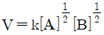
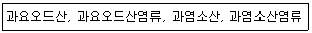
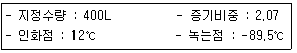

위험물산업기사 (2019-04-27 기출문제)
1과목: 일반화학
1. NH4Cl에서 배위결합을 하고 있는 부분을 옳게 설명한 것은?
- NH3의 N-H 결합
- NH3와 H+과의 결합
- NH4+과 Cl-
- H+과 Cl-과의 결합
(정답률: 75%)

2. 자철광 제조법으로 빨갛게 달군 철에 수증기를 통할 때의 반응식으로 옳은 것은?
- 3Fe+4H2O→Fe3O4+4H2
- 2Fe+3H2O→Fe2O3+3H2
- Fe+H2O→FeO+H2
- Fe+2H2O→FeO2+2H2
(정답률: 72%)
3. 불꽃 반응 결과 노란색을 나타내는 미지의 시료를 녹인 용액에 AgNO3 용액을 넣으니 백색침전이 생겼다. 이 시료의 성분은?
- Na2SO4
- CaCl2
- NaCl
- KCL
(정답률: 74%)
4. 다음 화학반응 중 H2O가 염기로 작용한 것은?
- CH3COOH+H2O→CH3COO-+H3O+
- NH3+H2O→NH4++OH-
- CO3-2+2H2O→H2CO3+2OH-
- Na2O+H2O→2NaOH
(정답률: 75%)
5. AgCl의 용해도는 0.0016g/L이다. 이 AgCl의 용해도곱(solubility product)은 약 얼마인가? (단, 원자량은 각각 Ag 108, Cl 35.5이다.)
- 1.24×10-10
- 2.24×10-10
- 1.12×10-5
- 4×10-4
(정답률: 55%)
6. 황이 산소와 결합하여 SO2를 만들 때에 대한 설명으로 옳은 것은?
- 황은 환원된다.
- 황은 산화된다.
- 불가능한 반응이다.
- 산소는 산화되었다.
(정답률: 84%)
7. 다음 화합물 중에서 밑줄 친 원소의 산화수가 서로 다른 것은? (문제 오류로 가답안 발표시 4번으로 발표되었지만 확정답안 발표시 모두 정답처리 되었습니다. 여기서는 4번을 누르면 정답 처리 됩니다.)
- CCl4
- BaO2
- SO2
- OH-
(정답률: 90%)
8. 먹물에 아교나 젤라틴을 약간 풀어주면 탄소입자가 쉽게 침전되지 않는다. 이 때 가해준 아교는 무슨 콜로이드로 작용 하는가?
- 서스펜션
- 소수
- 복합
- 보호
(정답률: 74%)
9. 황의 산화수가 나머지 셋과 다른 하나는?
- Ag2S
- H2SO4
- SO42-
- Fe2(SO4)3
(정답률: 70%)
10. 다음 물질 중 이온결합을 하고 있는 것은?
- 얼음
- 흑연
- 다이아몬드
- 염화나트륨
(정답률: 86%)
11. H2O가 H2S보다 끓는점이 높은 이유는?
- 이온결합을 하고 있기 때문에
- 수소결합을 하고 있기 때문에
- 공유결합을 하고 있기 때문에
- 분자량이 적기 때문에
(정답률: 83%)
12. 황산구리 용액에 10A의 전류를 1시간 통하면 구리(원자량=63.54)를 몇 g 석출하겠는가?
- 7.2g
- 11.85g
- 23.7g
- 31.77g
(정답률: 56%)
13. 실제 기체는 어떤 상태일 때 이상 기체 방정식에 잘 맞는가?
- 온도가 높고 압력이 높을 때
- 온도가 낮고 압력이 낮을 때
- 온도가 높고 압력이 낮을 때
- 온도가 낮고 압력이 높을 때
(정답률: 74%)
14. 네슬러 시약에 의하여 적갈색으로 검출되는 물질은 어느 것인가?
- 질산이온
- 암모늄이온
- 아황산이온
- 일산화탄소
(정답률: 65%)
15. 산(acid)의 성질을 설명한 것 중 틀린 것은?
- 수용액 속에서 H+를 내는 화합물이다.
- pH 값이 작을수록 강산이다.
- 금속과 반응하여 수소를 발생하는 것이 많다.
- 붉은색 리트머스 종이를 푸르게 변화시킨다.
(정답률: 87%)
16. 다음 반응속도식에서 2차 반응인 것은?

- V=k[A][B]
- V=[A][B]2
- V=k[A]2[B]2
(정답률: 68%)
17. 0.1M 아세트산 용액의 해리도를 구하면 약 얼마인가? (단, 아세트산의 해리상수는 1.8×10-5이다.)
- 1.8×10-5
- 1.8×10-2
- 1.3×10-5
- 1.3×10-2
(정답률: 40%)
18. 순수한 옥살산(C2H2O4ㆍ2H2O) 결정 6.3g을 물에 녹여서 500mL의 용액을 만들었다. 이 용액의 농도는 몇 M인가?
- 0.1
- 0.2
- 0.3
- 0.4
(정답률: 66%)
19. 비금속원소와 금속원소 사이의 결합은 일반적으로 어떤 결합에 해당되는가?
- 공유결합
- 금속결합
- 비금속결합
- 이온결합
(정답률: 73%)
20. 화학반응속도를 증가시키는 방법으로 옳지 않은 것은?
- 온도를 높인다.
- 부촉매를 가한다.
- 반응물 농도를 높게 한다.
- 반응물 표면적을 크게 한다.
(정답률: 77%)
2과목: 화재예방과 소화방법
21. 위험물안전관리법령상 제6류 위험물에 적응성이 있는 소화설비는?
- 옥내소화전설비
- 불활성가스소화설비
- 할로겐화합물소화설비
- 탄산수소염류 분말소화설비
(정답률: 72%)
22. 인산염 등을 주성분으로 한 분말소화약제의 착색은?
- 백색
- 담홍색
- 검은색
- 회색
(정답률: 87%)
23. 위험물안전관리법령상 위험물과 적응성이 있는 소화설비가 잘못 짝지어진 것은?
- K-탄산수소염류 분말소화설비
- C2H5OC2H5-불활성가스소화설비
- Na-건조사
- CaC2-물통
(정답률: 83%)
24. 다음 각 위험물의 저장소에서 화재가 발생하였을 때 물을 사용하여 소화할 수 있는 물질은?
- K2O2
- CaC2
- Al4C3
- P4
(정답률: 79%)
25. 위험물안전관리법령상 소화설비의 설치기준에서 제조소등에 전기설비(전기배선, 조명기구 등은 제외)가 설치된 경우에는 해당 장소의 면적 몇 m2 마다 소형수동식소화기를 1개 이상 설치하여야 하는가?
- 50
- 75
- 100
- 150
(정답률: 61%)
26. 위험물안전관리법령상 이동저장탱크(압력탱크)에 대해 실시하는 수압시험은 용접부에 대한 어떤 시험으로 대신할 수 있는가?
- 비파괴시험과 기밀시험
- 비파괴시험과 충수시험
- 충수시험과 기밀시험
- 방폭시험과 충수시험
(정답률: 71%)
27. 다음 보기에서 열거한 위험물의 지정수량을 모두 합산한 값은?

- 450kg
- 500kg
- 950kg
- 1200kg
(정답률: 67%)
28. 다음 중 화재 시 다량의 물에 의한 냉각소화가 가장 효과적인 것은?
- 금속의 수소화물
- 알칼리금속과산화물
- 유기과산화물
- 금속분
(정답률: 78%)
29. 위험물안전관리법령상 옥내소화전설비의 기준으로 옳지 않은 것은?
- 소화전함은 화재발생 시 화재 등에 의한 피해의 우려가 많은 장소에 설치하여야 한다.
- 호스접속구는 바닥으로부터 1.5m 이하의 높이에 설치한다.
- 가압송수장치의 시동을 알리는 표시등은 적색으로 한다.
- 별도의 정해진 조건을 충족하는 경우는 가압송수장치의 시동표시등을 설치하지 않을 수 있다.
(정답률: 67%)
30. 불활성가스소화약제 중 IG-55의 구성성분을 모두 나타낸 것은?
- 질소
- 이산화탄소
- 질소와 아르곤
- 질소, 아르곤, 아산화탄소
(정답률: 85%)
31. ABC급 화재에 적응성이 있으며 열분해 되어 부착성이 좋은 메타인산을 만드는 분말소화약제는?
- 제1종
- 제2종
- 제3종
- 제4종
(정답률: 78%)
32. 정전기를 유효하게 제거할 수 있는 설비를 설치하고자 할 때 위험물안전관리법령에서 정한 정전기 제거 방법의 기준으로 옳은 것은?
- 공기 중의 상대습도를 70% 이상으로 하는 방법
- 공기 중의 상대습도를 70% 미만으로 하는 방법
- 공기 중의 절대습도를 70% 이상으로 하는 방법
- 공기 중의 절대습도를 70% 미만으로 하는 방법
(정답률: 83%)
33. 자연발화가 일어날 수 있는 조건으로 가장 옳은 것은?
- 주위의 온도가 낮을 것
- 표면적이 작을 것
- 열전도율이 작을 것
- 발열량이 작을 것
(정답률: 84%)
34. 다음은 제4류 위험물에 해당하는 물품의 소화방법을 설명한 것이다. 소화효과가 가장 떨어지는 것은?
- 산화프로필렌 : 알코올형 포로 질식소화한다.
- 아세톤 : 수성막포를 이용하여 질식소화한다.
- 이황화탄소 : 탱크 또는 용기 내부에서 연소하고 있는 경우에는 물을 사용하여 질식소화한다.
- 디에틸에테르 : 이산화탄소소화설비를 이용하여 질식소화한다.
(정답률: 62%)
35. 피리딘 20000 리터에 대한 소화설비의 소요단위는?
- 5단위
- 10단위
- 15단위
- 100단위
(정답률: 61%)
36. 위험물제조소등에 설치하는 포 소화설비에 있어서 포헤드 방식의 포헤드는 방호대상물의 표면적(m2) 얼마 당 1개 이상의 헤드를 설치하여야 하는가?
- 3
- 5
- 9
- 12
(정답률: 67%)
37. 탄소 1mol이 완전 연소하는 데 필요한 최소 이론공기량은 약 몇 L인가? (단, 0℃, 1기압 기준이며, 공기 중 산소의 농도는 21vol%이다.)
- 10.7
- 22.4
- 107
- 224
(정답률: 63%)
38. 위험물제조소에 옥내소화전 설비를 3개 설치하였다. 수원의 양은 몇 m3 이상이어야 하는가?
- 7.8m3
- 9.9m3
- 10.4m3
- 23.4m3
(정답률: 77%)
39. 위험물안전관리법령상 옥내소화전설비의 비상전원은 자가발전설비 또는 축전지 설비로 옥내소화전 설비를 유효하게 몇 분 이상 작동할 수 있어야 하는가?
- 10분
- 20분
- 45분
- 60분
(정답률: 80%)
40. 수성막포소화약제를 수용성 알코올 화재 시 사용하면 소화효과가 떨어지는 가장 큰 이유는?
- 유독가스가 발생하므로
- 화염의 온도가 높으므로
- 알코올은 포와 반응하여 가연성 가스를 발생하므로
- 알코올이 포 속의 물을 탈취하여 포가 파괴되므로
(정답률: 79%)
3과목: 위험물의 성질과 취급
41. 금속 칼륨에 관한 설명 중 틀린 것은?
- 연해서 칼로 자를 수가 있다.
- 물속에 넣을 때 서서히 녹아 탄산칼륨이 된다.
- 공기 중에서 빠르게 산화하여 피막을 형성하고 광택을 잃는다.
- 등유, 경유 등의 보호액 속에 저장한다.
(정답률: 72%)
42. 과산화수소의 성질에 대한 설명 중 틀린 것은?
- 에테르에 녹지 않으며, 벤젠에 녹는다.
- 산화제이지만 환원제로서 작용하는 경우도 있다.
- 물보다 무겁다.
- 분해방지 안정제로 인산, 요산 등을 사용할 수 있다.
(정답률: 69%)
43. 위험물안전관리법령상 C6H2(NO2)3OH의 품명에 해당하는 것은?
- 유기과산화물
- 질산에스테르류
- 니트로화합물
- 아조화합물
(정답률: 63%)
44. 위험물을 저장 또는 취급하는 탱크의 용량은?
- 탱크의 내용적에서 공간용적을 뺀 용적으로 한다.
- 탱크의 내용적으로 한다.
- 탱크의 공간용적으로 한다.
- 탱크의 내용적에 공간용적을 더한 용적으로 한다.
(정답률: 89%)
45. P4S7에 고온의 물을 가하면 분해된다. 이 때 주로 발생하는 유독물질의 명칭은?
- 아황산
- 황화수소
- 인화수소
- 오산화린
(정답률: 62%)
46. 과산화칼륨에 대한 설명으로 옳지 않은 것은?
- 염산과 반응하여 과산화수소를 생성한다.
- 탄산가스와 반응하여 산소를 생성한다.
- 물과 반응하여 수소를 생성한다.
- 물과의 접촉을 피하고 밀전하여 저장한다.
(정답률: 55%)
47. 염소산칼륨이 고온에서 완전 열분해할 때 주로 생성되는 물질은?
- 칼륨과 물 및 산소
- 염화칼륨과 산소
- 이염화칼륨과 수소
- 칼륨과 물
(정답률: 80%)
48. 위험물안전관리법령상 위험물의 운반에 관한 기준에서 적재하는 위험물의 성질에 따라 직사일광으로부터 보호하기 위하여 차광성있는 피복으로 가려야 하는 위험물은?
- S
- Mg
- C6H6
- HCIO4
(정답률: 51%)
49. 연소시에는 푸른 불꽃을 내며, 산화제와 혼합되어 있을 때 가열이나 충격 등에 의하여 폭발할 수 있으며 흑색화약의 원료로 사용되는 물질은?
- 적린
- 마그네슘
- 황
- 아연분
(정답률: 54%)
50. 다음과 같은 성질을 갖는 위험물로 예상할 수 있는 것은?

- 메탄올
- 벤젠
- 이소프로필알코올
- 휘발유
(정답률: 59%)
51. 제5류 위험물 중 상온(25℃)에서 동일한 물리적 상태(고체, 액체, 기체)로 존재하는 것으로만 나열한 것은?
- 니트로글리세린, 니트로셀룰로오스
- 질산메틸, 니트로글리세린
- 트리니트로톨루엔, 질산메틸
- 니트로글리콜, 트리니트로톨루엔
(정답률: 51%)
52. 아세톤과 아세트알데히드에 대한 설명으로 옳은 것은?
- 증기비중은 아세톤이 아세트알데히드보다 작다.
- 위험물안전관리법령상 품명은 서로 다르지만 지정수량은 같다.
- 인화점과 발화점 모두 아세트알데히드가 아세톤보다 낮다.
- 아세톤의 비중은 물보다 작지만, 아세트알데히드는 물보다 크다.
(정답률: 63%)
53. 다음 중 특수인화물이 아닌 것은?
- CS2
- C2H5OC2H5
- CH3CHO
- HCN
(정답률: 64%)
54. 위험물안전관리법령상 주유취급소에서의 위험물 취급기준에 따르면 자동차 등에 인화점 몇 ℃ 미만의 위험물을 주유할 때에는 자동차 등의 원동기를 정지시켜야 하는가? (단, 원칙적인 경우에 한한다.)
- 21
- 25
- 40
- 80
(정답률: 79%)
55. C2H5OC2H5의 성질 중 틀린 것은?
- 전기 양도체이다.
- 물에는 잘 녹지 않는다.
- 유동성의 액체로 휘발성이 크다.
- 공기 중 장시간 방치 시 폭발성 과산화물을 생성할 수 있다.
(정답률: 61%)
56. 다음 중 자연발화의 위험성이 제일 높은 것은?
- 야자유
- 올리브유
- 아마인유
- 피마자유
(정답률: 77%)
57. 고체위험물은 운반용기 내용적의 몇 % 이하의 수납율로 수납하여야 하는가?
- 90
- 95
- 98
- 99
(정답률: 80%)
58. 황린이 연소할 때 발생하는 가스와 수산화나트륨 수용액과 반응하였을 때 발생하는 가스를 차례대로 나타낸 것은?
- 오산화인, 인화수소
- 인화수소, 오산화인
- 황화수소, 수소
- 수소, 황화수소
(정답률: 58%)
59. 제4류 위험물의 일반적인 성질에 대한 설명 중 가장 거리가 먼 것은?
- 인화되기 쉽다.
- 인화점, 발화점이 낮은 것은 위험하다.
- 증기는 대부분 공기보다 가볍다.
- 액체비중은 대체로 물보다 가볍고 물에 녹기 어려운 것이 많다.
(정답률: 70%)
60. 위험물안전관리법령상 지정수량의 10배를 초과하는 위험물을 취급하는 제조소에 확보하여야 하는 보유공지의 너비의 기준은?
- 1m 이상
- 3m 이상
- 5m 이상
- 7m 이상
(정답률: 75%)